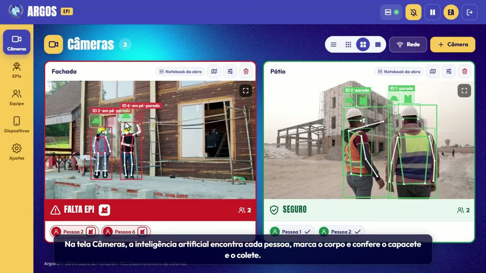
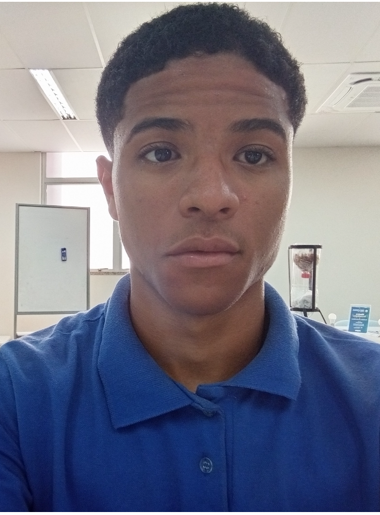

Detectar
Identifica pessoas e EPIs visíveis em imagens de câmeras conectadas ao sistema.
Tecnologia aplicada à segurança do trabalho
O Argos EPI combina câmeras, visão computacional e inteligência artificial para apoiar o monitoramento do uso de equipamentos de proteção individual — com alertas claros e histórico auditável.

01 · SOBRE
A AJCAM Linyx é uma equipe de desenvolvimento de sistemas do SENAI Lauro de Freitas. Nosso projeto, o Argos EPI, nasceu para apoiar quem precisa acompanhar ambientes operacionais com atenção contínua.
Identifica pessoas e EPIs visíveis em imagens de câmeras conectadas ao sistema.
Aplica as exigências definidas para cada área e relaciona o resultado à pessoa monitorada.
Destaca possíveis ausências de EPI em tempo útil, com sinais visuais e sonoros.
Organiza ocorrências e indicadores para orientar prevenção e melhoria contínua.
02 · HISTÓRICO
O Argos EPI começou analisando imagens isoladas. Com a evolução do projeto, passou a acompanhar cada pessoa, identificar os EPIs e reduzir alertas incorretos.
O protótipo verificava cada imagem separadamente.
Passou a reconhecer e acompanhar cada trabalhador.
Lida melhor com pessoas parcialmente encobertas e envia alertas em tempo real.
Desempenho da IA
68,3% Índice mAP@0,5: mede a qualidade das detecções realizadas nos testes.Imagens de treinamento
27 mil Exemplos usados para ensinar a IA a reconhecer pessoas e EPIs em 120 ciclos de treinamento.Alertas falsos
50 → 0 No teste com pessoas parcialmente encobertas, os alertas incorretos caíram de 50 para zero.Integração do sistema
122 Rotas e conexões ligam câmeras, painéis e servidores para o sistema funcionar em tempo real.PASSO A PASSO
Primeiro protótipoAnalisava cada imagem separadamente no computador.
Reconhecimento por pessoaPassou a acompanhar cada trabalhador e seus EPIs.
Mais capacidadeDistribuiu o processamento entre vários servidores.
Operação em tempo realGanhou câmeras WebRTC, avisos em TV e imagem Full HD.
03 · DEMONSTRAÇÃO
Explore o fluxo do sistema e simule uma possível ausência de EPI.
Teste o comportamento
Todos os EPIs exigidos foram identificados.VISÃO COMPUTACIONAL
O sistema recebe a imagem da câmera, encontra cada pessoa e relaciona os equipamentos visíveis às regiões corretas do corpo.
PITCH COMPLETO
Contexto, proposta e demonstração do sistema em uma única experiência.
04 · EQUIPE
A AJCAM Linyx reúne pesquisa, desenvolvimento, documentação e experiência de interface em um projeto construído de ponta a ponta.
AJCAM Linyx
AJCAM Linyx
AJCAM Linyx

AJCAM Linyx
05 · CONTATO
Fale com a equipe para conhecer o projeto, colaborar ou acompanhar a evolução do Argos EPI.